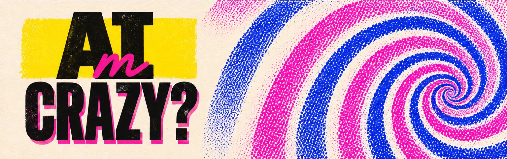
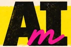

Florida men, rogue goats, 1890s sea serpents. Real headlines are unhinged. Swipe REAL or MADE UP, stack 5x streaks, or bet it all on 2X ALL-IN.

Am I Crazy? needs JavaScript to deal the cards. Turn it on and reload to play.